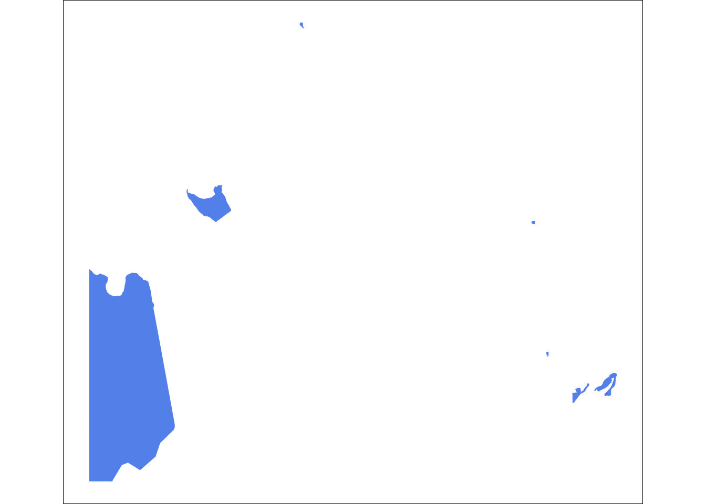

Linking to GEOS 3.11.0, GDAL 3.5.3, PROJ 9.1.0; sf_use_s2() is TRUE
library(ggplot2)library(osmdata)
Data (c) OpenStreetMap contributors, ODbL 1.0. https://www.openstreetmap.org/copyright
library(osmextract)
Data (c) OpenStreetMap contributors, ODbL 1.0. https://www.openstreetmap.org/copyright.
Check the package website, https://docs.ropensci.org/osmextract/, for more details.
Download water features. The water features are first divided into moving and stationary water. We will download the river layer from the waterway key.
water <-oe_get(place ="Lawrence, Kansas", layer ="lines",query ="SELECT * FROM lines WHERE waterway IN ('river')",quiet =TRUE)
bb <-getbb("Lawrence, Kansas")bb
min max
x -95.34454 -95.16662
y 38.90447 39.03350
We divide the water into large and small waterways in the same way we did with the road. We are interested in making the main river much larger and the remaining waterways collectively smaller. The Kansas river is the large feature in this map so, we pull it out first.
After removing the Kansas river, we are left with a number of remaining waterways that are stored as both linestrings and multilinestrings. We need to download each of those data types individually.
The stationary water bodies are a subcategory under the key=natural and the value=water. We ask for the extra column named water to be include in our returned sf table. We can use that column to filter our the lakes and reservours as local water bodies.
# Request all water features using natural:water but also request the water tag be given it's own column. water_body <-oe_get(place ="Lawrence, Kansas", layer ="multipolygons",query ="SELECT * FROM multipolygons WHERE natural IN ('water')",quiet =TRUE,extra_tags =c("water") #give water it's own column instead of clumping in supplimentary list)water_body_crop <- water_body %>%filter(water =='lake'| water =="reservoir") %>%st_as_sf() %>%st_make_valid()%>%st_crop(y =c(ymin = bb[2,1], ymax = bb[2,2], xmin = bb[1,1], xmax = bb[1,2]))

0.1 Stack downloaded OSM layers into a final basemap.
This is a special edit to manually shift the bounding box so that it better centered Haskell University in the basemap. Most people will not need this adjustment but may enjoy the ability to microadjust their basemap.
This is a long plot that calls each of the plot layers in order from the back to the front. There is a section at the end that crop, format, and append the basemap.
waterway_map <-ggplot() +# plot moving water layers firstgeom_sf(data = Kansas_river_multi, alpha = .8,linewidth =30, colour ="black") +geom_sf(data = small_water_lines, alpha = .8,linewidth =5, colour ="black") +# Layer bodies of water over the moving water layersgeom_sf(data = water_body_crop, alpha =1, fill ="black", size=0) +# clean out unused elements and set background colortheme_void() +theme(panel.background =element_rect(fill = our_purple),plot.background =element_rect(fill =NA))waterway_map